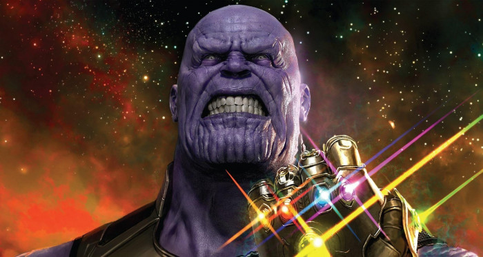

Thanos



Historia de Thanos
Thanos es un supervillano ficticio que aparece en los cómics estadounidenses publicados por Marvel Comics. Creado por el escritor y artista Jim Starlin, el personaje apareció por primera vez en The Invincible Iron Man # 55 (febrero de 1973). Su nombre es en parte un juego de palabras que hace referencia al término griego Θάνατος (Thánatos, "muerte"), pero sobre todo es una deformación del nombre del dios de la muerte no violenta, Tánatos. Es hijo de Mentor y hermano de Starfox. Se trata de uno de los villanos más poderosos de todo el Universo Marvel con un temperamento bastante malvado y se ha enfrentado a muchos héroes, incluidos los Vengadores, los Guardianes de la Galaxia, los Cuatro Fantásticos, los X-Men y otros.
Thanos nació en el planeta Titán como el hijo de los Eternos Mentor (A'Lars) y Sui-San, y su hermano es Eros de Titán, también conocido como Starfox. Thanos lleva el gen Deviants, y como tal, comparte la apariencia física de la raza de los primos Eternos. Al nacer, su madre se sorprendió por su apariencia e intentó matarlo, debido a que creía que su hijo aniquilaría toda la vida en el universo, pero fue detenido por A'lars, el padre de Thanos. Durante sus años escolares, Thanos era un pacifista y solo jugaba con su hermano Eros y sus mascotas. En la adolescencia, Thanos se había fascinado con el nihilismo y la muerte, adorando y finalmente enamorándose de la encarnación física de la muerte, la señora Muerte.Como adulto, Thanos aumentó su fuerza física y sus poderes a través de su conocimiento científico superior. También intentó crear una nueva vida para sí mismo al engendrar muchos niños y convertirse en pirata. No encuentra ninguna satisfacción en ninguno de los dos hasta que es visitado nuevamente por Señora Muerte, por quien asesina a su descendencia y su capitán pirata.
Deseando impresionar a la Señora Muerte, Thanos reúne a un ejército de alienígenas malvados y comienza un bombardeo nuclear de Titán que mata a millones de su raza.Buscando el poder universal en la forma del Cubo Cósmico, Thanos viaja a la Tierra. Antes de aterrizar, su embarcación destruye un automóvil cercano cuando una familia es testigo de su llegada. Sin saberlo Thanos, dos de los miembros de la familia en el vehículo sobreviven: el espíritu del padre es preservado por la entidad cósmica Titanian Kronos y se le da una nueva forma como Drax el Destructor mientras que el padre de Thanos, Mentor, encuentra a la hija y se eleva para convertirse en la heroína Dragón Lunar. Thanos finalmente localiza el Cubo y también atrae la atención de Señora Muerte. Deseando que el Cubo lo haga omnipotente, Thanos luego descarta el Cubo. Él encarcela a Kronos y se burla de la heroína Kree, la Capitana Marvel, quien, con la ayuda del equipo de superhéroes Vengadores e ISAAC (una súper computadora basada en Titán), eventualmente puede derrotar a Thanos destruyendo el Cubo. Thanos más tarde viene a ayudar a Adam Warlock en una guerra contra el Magus y su imperio religioso.Durante esta alianza, Thanos cultiva un plan para reunirse con la Señora Muerte, y en secreto extrae las energías de la gema del alma de Warlock, combinándolas con el poder de las otras Gemas del Infinito para crear un arma capaz de destruir una estrella. Warlock convoca a los Vengadores y al Capitán Marvel para detener a Thanos, aunque el plan se frustra cuando Thanos mata a Warlock. El Titán se reagrupa y captura a los héroes, que son liberados por Spider-Man y Thing. Thanos finalmente es detenido por Warlock, cuyo espíritu emerge de la gema del alma y convierte al Titán en piedra.El espíritu de Thanos reaparece para acompañar al alma de un Capitán Marvel moribundo en el reino de la Muerte.13